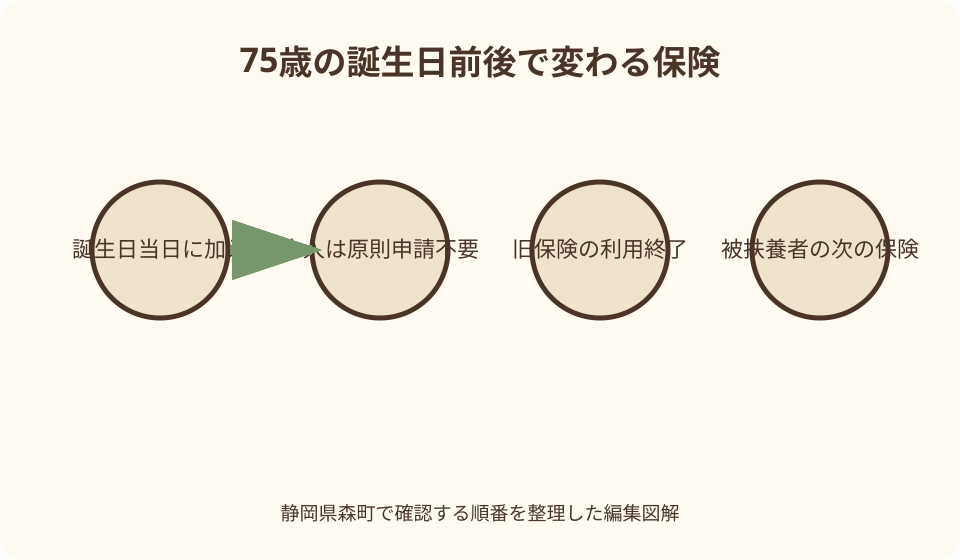
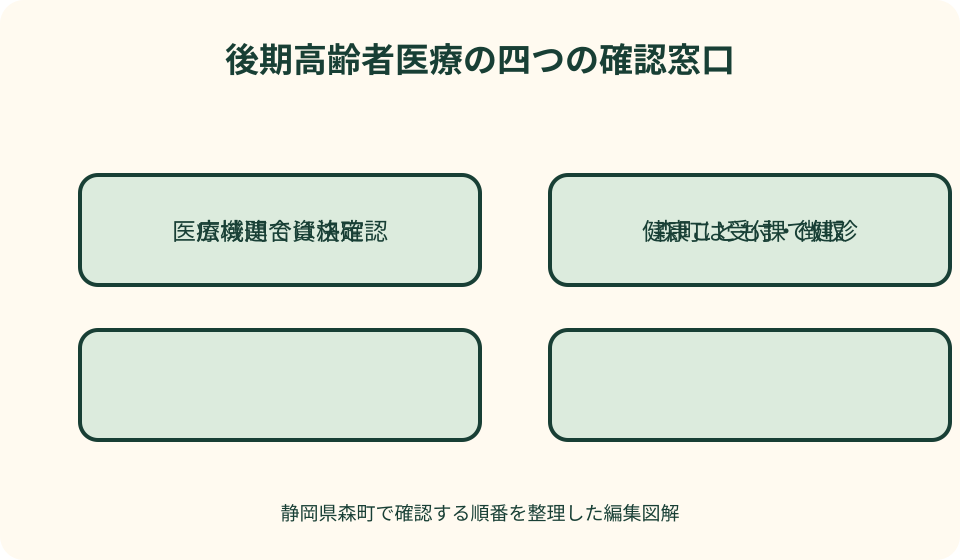

健康・医療・保険｜最終確認 2026-08-10
静岡県森町の後期高齢者医療制度｜75歳の切替・2026年度保険料・窓口負担
後期高齢者医療制度は、単に75歳から医療費が1割になる仕組みではありません。静岡県森町では、75歳の誕生日当日から従来の国保や勤務先保険を離れ、静岡県後期高齢者医療広域連合の被保険者になります。窓口負担は所得に応じて1割・2割・3割に分かれ、保険料は一人ずつ計算されます。2026年度からは保険料に子ども分も加わりました。誕生日前後に家族が確認する順番を具体化します。

編集イラスト最初に結論：75歳の誕生日当日に切り替わる
森町に住む人は、75歳の誕生日当日から後期高齢者医療制度の被保険者になります。月の翌月からではなく誕生日当日が資格取得日で、従来の国民健康保険や勤務先の健康保険から切り替わります。
75歳到達による加入は、本人が選択するものではなく、原則として加入申請も不要です。誕生日が近づいたら、届く資格関係書類、保険料通知、医療機関で使う物を確認します。
制度の保険者は静岡県後期高齢者医療広域連合です。森町役場は、資格確認書の引渡し、保険料の徴収、各種届出の受付、住民からの相談を担います。
医療機関での自己負担は一律1割ではありません。本人と同じ世帯の後期高齢者の所得などを基に、1割、2割、3割のいずれかが決まり、資格情報のお知らせや資格確認書で確認します。
広域連合と森町の役割を分ける
静岡県後期高齢者医療広域連合は、県内全市町で構成される制度の運営主体です。被保険者資格の管理、保険料の決定、医療給付、窓口負担割合などを扱います。
森町は、広域連合が決めた保険料の徴収、申請・届出の受付、資格確認書の交付、相談窓口を担当します。日常の手続では森町住民生活課国保年金係が入口です。
保険料の計算根拠や資格判定を詳しく聞くときは広域連合、納付書や口座振替、届出方法を聞くときは森町という切り分けが基本です。ただし本人が窓口を選び切れなくても、まず森町へ相談できます。
広域連合の代表電話と、資格・保険料、医療給付の担当電話は別に設けられています。家族が問い合わせる場合は、通知書の名称と聞きたい内容を伝え、個人情報の確認方法に従います。
75歳到達前に準備すること
誕生日の一、二か月前になったら、現在の健康保険、マイナ保険証の利用登録、郵便物の送付先を確認します。施設入所や長期不在なら、書類を誰が受け取るかも決めます。
誕生日以後は、それまでの国保資格確認書や勤務先保険の資格を使い続けません。旧保険者から返却や処分の案内がある場合は、それに従います。
勤務先保険の本人が75歳になると、その被扶養者だった75歳未満の配偶者等は同時に資格を失い、別の保険加入手続が必要になる場合があります。本人の切替だけで終わらせないでください。
通院中なら、誕生日が近いことを医療機関と薬局へ伝えます。同じ月の途中で保険が変わるため、誕生日前後に別々の資格で受診した記録を、領収書とともに保管します。
65～74歳の障害認定
65歳以上75歳未満でも、一定の障害があり、静岡県後期高齢者医療広域連合の認定を受けた人は対象になります。年齢や障害者手帳の所持だけで自動加入する仕組みではありません。
森町公式ページは、申請時の持ち物として、現在の資格確認書または資格情報のお知らせ、身体障害者手帳など、印鑑を挙げています。障害の種類により認定資料が異なるため事前に確認します。
障害認定で加入すると、現在の国保や勤務先保険から後期高齢者医療へ移り、保険料と窓口負担の判定も変わります。医療費だけでなく世帯全体の保険料への影響も試算してから相談します。
75歳未満の障害認定は、申請撤回により制度から外れることができる場合がありますが、遡って自由に選び直せるとは限りません。資格日と次の保険加入を広域連合・森町へ確認します。

2026年8月現在の資格確認方法
医療機関や薬局では、健康保険証として利用登録したマイナンバーカード、つまりマイナ保険証か、有効な資格確認書を提示します。従来型の健康保険証を前提に受診準備をしません。
後期高齢者全員へ資格確認書を交付する暫定運用は、2026年7月31日までと案内されていました。2026年8月以後は、マイナ保険証の保有・登録状況と交付書類を個別に確認する必要があります。
マイナ保険証を持つ人は、マイナポータルまたは資格情報のお知らせで保険者、窓口負担割合などを確認できます。資格情報のお知らせだけでは通常の資格確認を完了できません。
マイナ保険証を持たない人には資格確認書が関係します。誕生日までに書類が届かない、住所が変わった、施設へ入所した場合は、森町国保年金係へ送付状況を確認してください。
窓口負担は1割・2割・3割
医療費の窓口負担は、一般所得者等が1割、一定以上所得がある人が2割、現役並み所得者が3割です。75歳という年齢だけで全員が1割になるわけではありません。
3割は、同じ世帯に住民税課税所得145万円以上の後期高齢者がいる場合を基本に判定します。ただし収入額による基準に該当し、申請で1割または2割になる場合があります。
2割は、3割に当たらない世帯のうち、課税所得28万円以上の被保険者がいて、年金収入とその他の合計所得金額が所定基準以上の場合です。単身と複数被保険者世帯で基準額が異なります。
家族が概算して断定するより、資格情報のお知らせ、資格確認書、マイナポータルに表示された負担割合を確認します。所得更正や世帯異動があれば年度途中に変わる場合もあります。
2割負担の配慮措置は終了済み
2割負担の導入時には、1か月の外来負担増を3,000円までに抑える配慮措置がありました。しかしこの措置は2025年9月30日で終了しています。
古いパンフレットや家族の過去の入金記録には、配慮措置による払い戻しが載っていることがあります。2026年の受診費を同じ仕組みで見込まないでください。
配慮措置終了後も、高額療養費制度そのものは続いています。一般区分の外来には月額・年間の上限がありますが、所得区分や入院を含むかで計算が変わります。
医療費が高額になった人には、初回申請書が森町から送られる運用が広域連合から案内されています。届いた書類を還付金詐欺と混同せず、連絡先を公式サイトで照合します。
2026年度の保険料を読む
2026・2027年度の静岡県の医療分保険料は、所得割率9.35％、均等割額5万1,100円、賦課限度額85万円です。保険料は被保険者一人ごとに計算されます。
2026年度から子ども・子育て支援金制度に対応する子ども分が加わり、所得割率0.25％、均等割額1,400円、賦課限度額2万1,000円です。医療分とは端数と上限を別に扱います。
計算の基本は、医療分と子ども分それぞれについて、前年の総所得金額等から基礎控除43万円を引いた額へ所得割率を掛け、均等割額を加える形です。100円未満は各分で切り捨てます。
年度途中で75歳になった人は、加入した月から月割りで計算されます。たとえば6月30日が誕生日なら6月加入として扱われ、4月からの年額をそのまま請求されるわけではありません。
保険料の軽減制度
所得が一定基準以下の世帯では均等割額が軽減されます。判定には被保険者だけでなく世帯主の所得も関係し、7割・5割・2割などの区分があります。
2026年度は基準額が更新され、医療分の最も低所得の区分には7.2割という読替えもあります。前年の表や他県の数字を使わず、静岡県広域連合の当年度表を確認します。
勤務先の健康保険等で被扶養者だった人は、後期高齢者医療加入後、所得割がかからず、加入から2年間は均等割が5割軽減される措置があります。国保の被扶養者という制度はないため、以前の加入先を正確に伝えます。
災害、失業、事業不振などで納付が著しく難しい場合は、申請による減免の可能性があります。納期限や年金支払日の7日前までという申請期限が示されるため、状況が悪化した段階で早めに森町へ相談します。
年金天引きと納付書・口座振替
森町では、年金額が年18万円以上などの要件を満たす人は、原則として年金から保険料を差し引く特別徴収になります。4月から翌年2月までの偶数月、年6回です。
介護保険料との合計が、対象年金の一回の支給額の2分の1を超える場合などは、特別徴収になりません。その場合は納付書または口座振替による普通徴収で納めます。
75歳になった直後は、年金天引きがすぐ始まらず納付書が届くことがあります。将来天引きになると思って納付書を放置すると未納になるため、通知に記載された納付方法を優先します。
申請により、特別徴収から口座振替へ変更できます。ただし手続時期によって直近の年金支給には間に合わない場合があり、家族口座を使えるかなども森町へ確認します。
国保税と後期保険料が同時に見える理由
75歳になった年度には、誕生日前の森町国保税と、誕生月以後の後期高齢者医療保険料の通知が届くことがあります。二重加入ではなく、それぞれの資格期間を月割りした結果です。
国保税は世帯主宛て、後期高齢者医療保険料は被保険者本人単位で通知されるため、宛名も異なります。封筒の制度名と対象期間を確認します。
同じ月に両方の納期が設定される場合もありますが、納期と加入対象月は一致しません。支払月だけを見て二重請求と判断せず、年間計算の明細を照合します。
国保に残る配偶者などがいると、世帯の国保税も人数変更によって再計算されます。本人の後期保険料だけでなく、家族の国保税変更通知も確認してください。

医療費が高額になったとき
同じ月の医療費自己負担が所得区分別の上限を超えた場合、超過分が高額療養費として支給されます。外来のみは個人単位、外来と入院は同じ世帯の被保険者分を合算します。
75歳になった月は、誕生日前の医療保険と後期高齢者医療で自己負担上限をそれぞれ半分にする特例が関係する場合があります。1日生まれや障害認定など例外もあるため個別に確認します。
マイナ保険証で限度額情報の提供に同意すれば、医療機関で所得区分を確認できる場合があります。オンライン資格確認に対応しない施設では、資格確認書への区分記載申請が必要になることがあります。
高額療養費と高額介護合算療養費は計算期間が違います。医療と介護の双方を利用する家族は、領収書と決定通知を年度・制度別に保管します。
転居・施設入所時の届出
県外へ転出するときは、原則として転出先の広域連合へ資格が移ります。森町公式は資格確認書または資格情報のお知らせ、印鑑を届出の持ち物として案内しています。
静岡県内で住所が変わる場合も住所変更の届出が関係します。新しい市町で資格情報を引き継ぐため、旧書類をそのまま使い続けず案内に従います。
県外の病院や介護施設へ入所しても、住所地特例により静岡県の被保険者として継続する場合があります。住民票の移転先だけで保険者が変わると決めつけません。
家族が施設入所を手配する際は、住民票、介護保険、後期高齢者医療の住所地特例を別々に確認します。資格確認書の送付先や保険料通知の受取人も合わせて相談します。
死亡時の届出と葬祭費
被保険者が死亡したときは資格喪失の手続に加え、葬祭を行った人が申請すると葬祭費5万円が支給されます。死亡届だけで葬祭費が自動振込されるわけではありません。
森町公式は、死亡した人の保険証、会葬礼状または領収書、葬祭執行者の印鑑、葬祭費の振込口座を案内しています。現在の書類名称に読み替える必要があるか、来庁前に確認します。
葬祭費の申請者は相続人順位だけで決まらず、葬祭を行った人です。領収書と申請者の名義が違う場合は、補足資料を国保年金係へ尋ねます。
未支給の高額療養費、保険料の精算、送付先変更などが残る場合があります。死亡時の保険関係書類を一つの封筒にまとめ、どの手続を誰が行ったか記録します。
後期高齢者の健康診査
医療保険の切替後も、治療中かどうかにかかわらず健康診査を受けられます。森町の2026年度案内は、受診日に75歳以上の人へ後期高齢者の健康診査を案内しています。
2026年度の健診は、集団健診と個別健診があり、公立森町病院、森町家庭医療クリニック、近隣医療機関などが案内されています。日程と自己負担額は年度資料で確認します。
74歳の時点で国保特定健診を申し込み、受診日には75歳になっている場合、健診区分が変わる可能性があります。予約先へ誕生日と資格切替を伝えてください。
健診の担当は森町健康こども課、保険資格や保険料の担当は住民生活課国保年金係です。同じ健康の相談でも担当を分けると、予約と資格確認を効率よく進められます。
後期高齢者医療制度の良い点
良い点は、75歳以上を独立した制度で支え、窓口負担以外の医療費を公費約5割、現役世代からの支援金約4割、被保険者の保険料約1割で分担する仕組みがあることです。
高額療養費、療養費、葬祭費などの給付が用意され、所得区分に応じて負担上限も設定されます。高齢期に通院や入院が重なっても負担が際限なく増えない仕組みです。
県内では広域連合が資格と給付を一体的に扱い、身近な申請や相談は森町が受けます。制度の統一性と地域窓口の両方を持つ点は利用者にとって助けになります。
保険料は世帯単位ではなく一人ごとに計算されるため、本人の通知から均等割、所得割、軽減を確認できます。家族の国保税と混ざりにくい設計です。
制度案内に注文したい点
注文したい点は、森町の制度ページが2024年12月更新のままで、2026年度の保険料率や子ども分、資格確認書の暫定運用終了をページ内で追いにくいことです。広域連合へのリンクだけでなく要点更新が望まれます。
『75歳以上は全員』『65歳以上の一定障害』という入口は分かりやすい一方、誕生月の国保税との関係、被扶養者家族の次の保険は見落とされがちです。家族単位の切替図があると安心です。
窓口負担2割の配慮措置が終了しても、古いPDFが検索に残っています。終了日を大きく表示し、現在の高額療養費へ誘導する案内を一層明確にしてほしいところです。
保険料、窓口負担、高額療養費では所得を見る範囲や基準が同一ではありません。単に『所得により決まる』とせず、それぞれの判定単位を比較表で示すと誤解を減らせます。
書類が届かないときの代案・結論
誕生日が近いのに資格確認書等が届かない場合は、郵便の転送、住民票住所、施設入所、マイナ保険証登録を確認し、森町国保年金係へ連絡します。家族だけで再発行を判断しません。
受診日に資格確認ができない場合は、医療機関の受付へ事情を伝えます。マイナポータルの資格画面や資格情報のお知らせをカードと組み合わせるなど、国が示す代替確認方法が使える場合があります。
保険料通知が理解しにくい場合は、前年所得、加入月、均等割・所得割、軽減、医療分・子ども分を分けて質問します。総額だけを見せるより確認箇所が明確になります。
結論として、誕生日、現在の保険、同じ保険の被扶養者、資格確認方法、保険料納付方法を一枚に書くことが第一歩です。届いた書類と受診先の表示が違うときは、その場で森町または広域連合へ確認します。
大石の視点：本人だけでなく家族の保険を見る
大石の視点では、75歳の切替で最も大きな落とし穴は、本人の資格確認書だけを見て、被扶養者だった配偶者の保険を忘れることです。家族全員の加入先を誕生日前後で並べます。
年金天引きになると思い込み、加入直後の納付書を放置する例も避けたいところです。通知書を開封する担当、支払う担当、口座残高を見る担当を家族で決めます。
三倉や天方など町北部で暮らす高齢者には、書類不足による役場との往復が負担になります。電話で持ち物と代理手続を確認し、受診予定と同日に無理を重ねない計画が必要です。
実家管理や施設入所を考える家族は、保険、介護、住民票、不動産を一つの手続だと思わないことです。それぞれの担当と基準日を分け、原本の所在だけを共通の一覧にします。
相談先と伝える情報
森町での入口は住民生活課国保年金係で、町公式ページの電話番号は0538-85-6313です。電話番号や開庁時間は連絡当日に公式ページで再確認します。
資格や保険料の制度判断は静岡県後期高齢者医療広域連合の資格保険料室、給付は医療給付室が担当します。森町から広域連合へ確認するよう案内されたら、通知書番号と質問を準備します。
問い合わせでは、本人の生年月日、住所、75歳の誕生日、現在の保険、マイナ保険証の有無、届いた書類名、受診予定日を伝えます。個人番号を通常メールへ書かないでください。
回答は、確認日、担当機関、必要書類、次の期限だけでも記録します。窓口負担や保険料は所得更正で変わり得るため、回答がどの年度を対象にしたものかも残します。
まとめ：75歳前後の確認順
誕生日前は、現在の保険と被扶養者家族、マイナ保険証の登録、書類送付先を確認します。通院先には誕生日当日に保険が変わることを伝えます。
誕生日後は、マイナ保険証または資格確認書で後期高齢者医療の資格と窓口負担割合を確認します。古い国保・勤務先保険の書類は旧保険者の案内に従って整理します。
保険料通知が届いたら、加入月、医療分、子ども分、軽減、納付方法を読みます。国保税の通知も届く年度は、それぞれの資格期間を月ごとに照合します。
本稿は2026年8月10日時点の一次情報に基づきます。料率、負担基準、資格書類は変わり得るため、森町、静岡県後期高齢者医療広域連合、厚生労働省の最新案内を優先してください。
公式情報・確認先
掲載内容は次の一次情報を基礎に整理しました。営業、料金、催し、交通は変わるため、出発前または手続き前にリンク先で最新情報を確認してください。
- 後期高齢者医療制度（静岡県森町、2026-08-10確認）
- 大人の健康・検診・相談・健康づくり（静岡県森町、2026-08-10確認）
- 令和8年度森町健康診査のご案内（静岡県森町、2026-08-10確認）
- 後期高齢者医療制度とは（静岡県後期高齢者医療広域連合、2026-08-10確認）
- 保険料の金額（静岡県後期高齢者医療広域連合、2026-08-10確認）
- 医療費の窓口負担の割合（静岡県後期高齢者医療広域連合、2026-08-10確認）
- 保険料の軽減制度・減免制度（静岡県後期高齢者医療広域連合、2026-08-10確認）
- 後期高齢者の窓口負担割合の変更等（厚生労働省、2026-08-10確認）